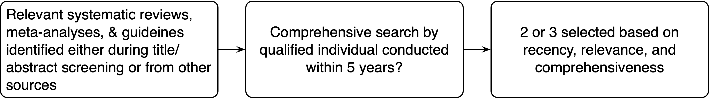

3 Systematic Review
Trustworthy clinical practice guidelines (Graham 2011) are supported by systematic reviews meeting explicit standards (Eden 2011; Patient-Centered Outcomes Research Institute and others 2019). The systematic reviews supporting ASA practice parameters conform to those standards.
3.1 Protocol
The protocol, developed collaboratively between the task force and methodologists, guides systematic review conduct, and provides documentation for updates. It includes background material, key questions, PICOs, analytic framework, study inclusion and exclusion criteria, search strategy, and the anticipated approach to evidence synthesis. Depending on the anticipated scope, protocols may be registered on PROSPERO. (Booth et al. 2012) However, when the systematic review includes numerous questions and anticipated to require substantial refinement and modifications, registration is omitted. The protocol is included in a supplement to the published practice parameter.
An example protocol can be viewed here.
3.2 Outcome Importance
Outcomes vary in importance for decision making and formulating recommendations. Importance incorporates patient preferences and values for those outcomes. (Guyatt et al. 2011) Following protocol completion, task force members independently rank beneficial and harmful outcome importance for decision-making. The rankings are reviewed by the entire task force and revised to achieve consensus. Outcomes are then assigned a level of importance (critical, important but not critical, low importance) to prioritize the evidence synthesis and inform recommendations.
3.3 Identifying Relevant Literature
3.3.1 Database Searches
A librarian/information specialist develops search strategies. Bibliographic databases queried include PubMed, Embase®, Scopus®, and Cochrane Central Register of Controlled Trials. The task force also submits relevant references for consideration, including systematic reviews and guidelines for reference checking. To ensure that relevant publications have been captured, search result identification of references submitted by the task force is examined. Grey literature searches are topic-dependent, and may rely on registries, conference abstracts, preprint servers, and FDA documents including advisory meeting transcripts.
3.3.2 Reference Checking
Studies referenced in relevant reviews (guidelines, systematic reviews, meta-analyses, and guidelines identified during title abstract screening are considered eligible for inclusion.
The selection process outlined below used to identify 2 to 3 reviews. References from those reviews are compiled in a bibliographic database and those not included in the ASA search are added to DistillerSR for screening.

3.3.3 Task Force contributed
The task force is given the opportunity to submit potentially relevant primary studies, guidelines, systematic reviews, and meta-analyses. The non-primary research are included in the reference checking process and they remainder considered in the standard selection process.
3.3.4 Deduplication
Citations are maintained in EndNote™. Deduplication is performed using EndNote™ and a dedicated systematic review software (DistillerSR).
3.4 Title Abstract Screening and Full-Text Selection
Based on the inclusion-exclusion criteria, study selection is performed with titles and abstracts stage followed by a full-text review of identified articles. Study designs included in the systematic review are determined by the questions, PICOs, and evidence availability. Two reviewers independently apply criteria at each stage with discrepancies resolved by discussion or a third reviewer if needed. As appropriate, training sets are used to develop agreement concerning the application of inclusion-exclusion criteria. Reasons for exclusion at the full-text stage are recorded using a standard set of justifications. Semi-automated predictive tools for title/abstract screening are utilized;(Polanin et al. 2019) screening may be truncated when inclusion predictions for the remaining references are low (eg, less than 2% to 3%) when the number of references is exceedingly large.
3.5 Data Abstraction and Management
Accurate data abstraction, quality control, and data management enhance reproducibility and support valid evidence synthesis. Standard review-specific forms are utilized for data entry by a single reviewer(Patient-Centered Outcomes Research Institute and others 2019) with verification of relevant data for quantitative synthesis data. Data are maintained and edited in DistillerSR and data dictionaries compiled to facilitate analysis. Data are transferred to local storage for analysis.
3.6 Data Elements
Study design categorization
Randomized designs
Quasi-experimental
Before-after w or w/o control
Interrupted time series w or w/o control
3.7 Data Availability
Following completion of a practice parameter, all abstracted data are publicly available on GitHub.